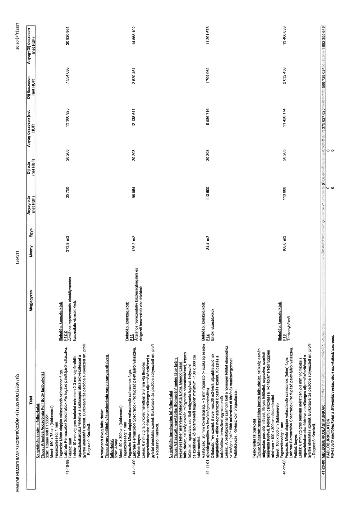

| Tétel | Megjegyzés | Menny. | Egys. | Anyag e.ár (net HUF) | Díj e.ár (net HUF) | Anyag összesen (net HUF) | Díj összesen (net HUF) | Anyag+Díj összesen (net HUF) |
|---|---|---|---|---|---|---|---|---|
| 41-10-99 Nagytáblás kerámia falburkolat Típus: Ariostea Accademia Full Body lapburkolat Szín: Tiziano soft P150651 Méret: 150 x 75 cm (táblaméret) Fugaszélesség: 1 mm Fugaszín: Minta alapján választandó színazonos fuga, Laticrete Permacolor/SpectraLock Pro fugázó palettájáról választva. Felület: matt Leírás: 10 mm vtg gres burkolat méretben 2-3 mm vtg flexibilis ragasztóhabarcsba fektetve a szükséges aljzatelőkészítéssel a gyártói útmutatás szerint. Burkolatváltás padlóba süllyesztett rm. profil - Ragasztó: Kerakoll. | Belsőép. konszig.kód: F12.2 Általános reprezentatív akadálymentes használatú vizesblokkok. | 373,9 | m2 | 35 750 | 20 203 | 13 366 925 | 7 554 036 | 20 920 961 |
| 41-11-00 Aranyozott üveg falburkolat Típus: Arany felületű vékonykerámia vagy aranyozott üveg falburkolat Szín: Arany Méret: 50 x 300 cm (táblaméret) Fugaszélesség: 1 mm Fugaszín: Minta alapján választandó színazonos fuga. Leírás: 6 mm vtg falburkolat méretben 2-3 mm vtg flexibilis ragasztóhabarcsba fektetve a szükséges aljzatelőkészítéssel a gyártói útmutatás szerint. Burkolatváltás padlóba süllyesztett rm. profil - Ragasztó: Kerakoll. | Belsőép. konszig.kód: F13 Általános reprezentatív közönségforgalmi és dolgozói használatú vizesblokkok. | 125,2 | m2 | 96 954 | 20 203 | 12 138 641 | 2 529 461 | 14 668 102 |
| 41-11-01 Nagytáblás természetes kő falburkolat Típus: Választott nagytáblás (homogén/ meleg lágy krém erezetes) fehér márvány (Calacatta Extra, Bianco Lasa) falburkolat, szükség esetén műgyantás pórustömítéssel, fényes felülettel, ragasztva, szorított műgyanta fugával, helyszíni csiszolással, kő táblamérettől függően minimum ~100 x 300 cm táblamérettel. Vastagság: 20 mm kővastagság, ~5 mm ragasztó (+ szükség esetén aljzatkiegyenlítés és feszültségmentesítés) Dilatáció: terv szerint, illetve max 36 m2-ként, aljzatdilatációnak megfelelően – előre meghatározott kiosztás szerint. Kiosztás a belsőépítész tervezővel egyeztetendő. Leírás: A bedolgozásnál számolni kell a homogén felület eléréséhez szükséges (akár több műszakon át történő) munkavégzéssel. Felületképzés: Kőviasz kőimpregnálással. | Belsőép. konszig.kód: F14 Elnöki vizesblokkok | 84,4 | m2 | 113 600 | 20 203 | 9 586 716 | 1 704 962 | 11 291 678 |
| 41-11-03 Teakonyha falburkolat Típus: Választott nagytáblás kerite falburkolat, szükség esetén műgyantás pórustömítéssel, fényes felülettel, ragasztva, szorított műgyanta fugával, helyszíni csiszolással, kő táblamérettől függően minimum ~100 x 300 cm táblamérettel Méret: 100 x 300 cm (táblaméret) Fugaszélesség: 1 mm Fugaszín: Minta alapján választandó színazonos (fehér) fuga, Laticrete Permacolor/SpectraLock Pro fugázó palettájáról választva. Felület: fényes Leírás: 6 mm vtg gres burkolat méretben 2-3 mm vtg flexibilis ragasztóhabarcsba fektetve a szükséges aljzatelőkészítéssel a gyártói útmutatás szerint. Burkolatváltás padlóba süllyesztett rm. profil - Ragasztó: Kerakoll. | Belsőép. konszig.kód: F18 Teakonyháknál | 100,6 | m2 | 113 600 | 20 203 | 11 428 174 | 2 032 458 | 13 460 633 |
| 41-20-00 MELEGBURKOLÁSI MUNKÁK | NaN | NaN | NaN | 0 | 0 | 1 375 627 025 | 506 728 624 | 1 882 355 649 |
| PADLÓBURKOLATOK | PB-03 jelű padlóburkolat a Műemléki restaurátori munkáknál szerepel. | NaN | NaN | 0 | 0 | 0 | 0 | 0 |
